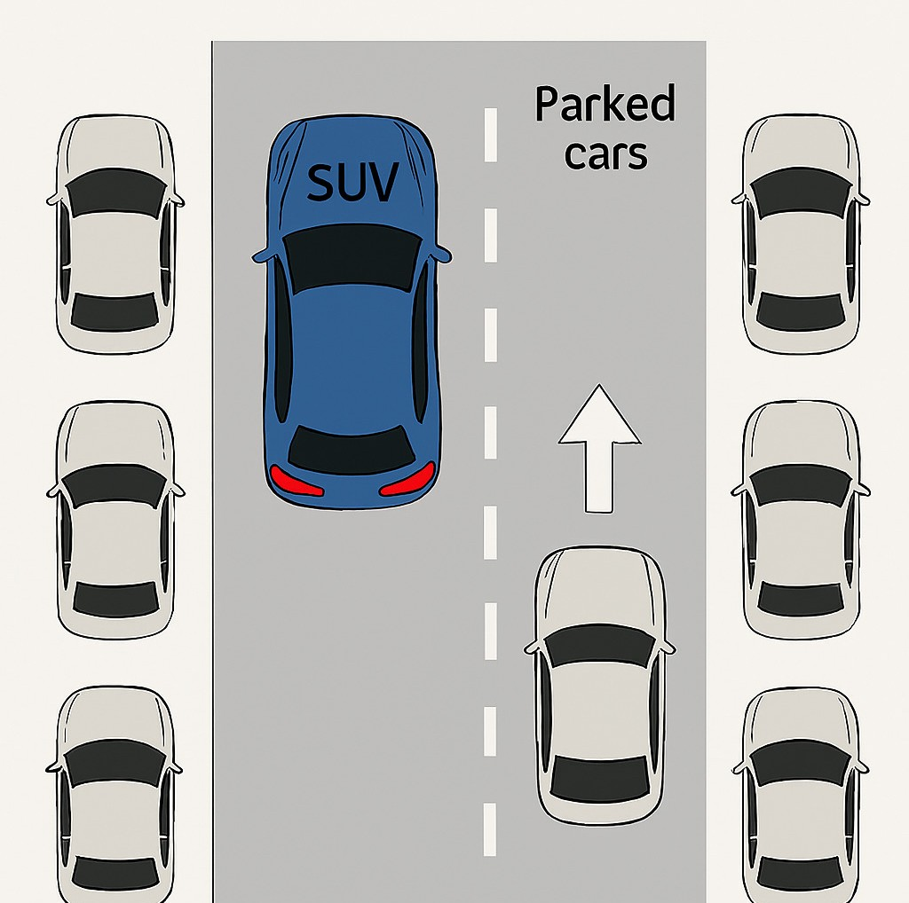

Comment permettre à un usager de la route de percevoir un danger survenant sur la route quand celui-ci ne peut pas être perçu ?
Nous avons répondu à la problématique suivante :

Pour y répondre, nous nous sommes questionnés : "Comment résoudre ce problème ?".

Avec l'aide de plusieurs spécialistes, de nos professeurs et de notre coach étudiant Louison, nous avons répondu à cette problématique en créant Urban Safe Mobility (USM).
Nous à Stuttgart :

En raison de notre projet, nous nous sommes renseignés au musée Mercedes-Benz à Stuttgart.